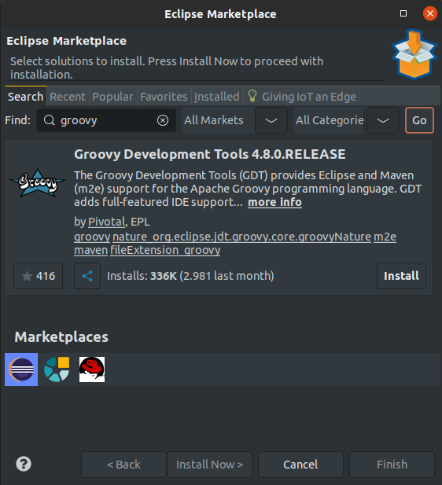

Groovy es un lenguaje ágil y
dinámico para la plataforma Java. A partir de OpenXava 4m6 puedes escribir
el código de tu aplicación usando Groovy en vez de Java. Incluso puedes
combinar ambos lenguajes en la misma aplicación.
Configurar OpenXava
Studio
La forma más fácil de trabajar con Groovy en OpenXava es usando el plugin
de
Groovy para Eclipse.
Dado que OpenXava Studio está basado en Eclipse, puedes instalar el plugin
en él. En OpenXava Studio ve al menú
Help > Eclipse Marketplace
y busca por "Groovy". Instala el que se llama"Groovy Development Tools":

Si estás usando una versión de
OpenXava anterior a v5.0 ve a
Preferences > Groovy > Compiler
y escoge
Groovy Compiler 1.8.
Has de dar la naturaleza Groovy a tu proyecto OpenXava: pulsa en el botón
de la derecha de tu proyecto, y escoge
Configure > Convert to
Groovy project. Los proyectos OpenXava creados desde v4m6 hasta la
v5.9.1 tienen la naturaleza Groovy por defecto, pero a los de OpenXava v6
y v7 hay que darles la naturaleza Groovy explicitamente.
A partir de ahora, podrás añadir clases Groovy a tu proyecto, o convertir
algunas de tus clases Java en clases Groovy, y simplemente funcionará.
Cuando grabes una clase
.groovy se compilará en
.class
automaticamente. Puedes poner tu código Grovvy en la carpeta in
src/main/java
de tu proyecto con OpenXava v7 o en cualquier carpeta de código fuente en
versiones anteriores de OpenXava.
Algún código
de ejemplo
Puedes escribir las entidades JPA con Groovy:
package org.openxava.test.model;
import javax.persistence.*
import org.openxava.annotations.*
import org.openxava.calculators.*
import org.openxava.model.*
import org.openxava.jpa.*
@Entity
@Table(name="TOrder")
@View(members="""
year, number, date;
customer;
details;
amount;
remarks
"""
)
class Order extends Identifiable {
@Column(length=4)
@DefaultValueCalculator(CurrentYearCalculator.class)
int year
@Column(length=6)
int number
@Required
@DefaultValueCalculator(CurrentDateCalculator.class)
Date date
@ManyToOne(fetch=FetchType.LAZY, optional=false)
@ReferenceView("Simplest")
Customer customer
@OneToMany(mappedBy="parent", cascade=CascadeType.ALL)
@ListProperties("product.number, product.description, quantity, product.unitPrice, amount")
Collection<OrderDetail> details = new ArrayList<OrderDetail>()
@Stereotype("MEMO")
String remarks
@Stereotype("MONEY")
BigDecimal getAmount() {
BigDecimal result = 0
details.each { OrderDetail detail ->
result += detail.amount
}
return result
}
@PrePersist
void calculateNumber() throws Exception {
Query query = XPersistence.getManager()
.createQuery("select max(o.number) from Order o " +
"where o.year = :year")
query.setParameter("year", year)
Integer lastNumber = (Integer) query.getSingleResult()
this.number = lastNumber == null?1:lastNumber + 1
}
}
O las acciones:
package org.openxava.test.actions
import org.openxava.actions.*
class ChangeYearConditionAction extends TabBaseAction {
int year;
void execute() throws Exception {
tab.setConditionValue("year", year)
}
}
Incluso las pruebas JUnit:
package org.openxava.test.tests
import javax.persistence.*
import org.openxava.tests.*
import org.openxava.util.*
import com.gargoylesoftware.htmlunit.html.*
import static org.openxava.jpa.XPersistence.*
class OrderTest extends ModuleTestBase {
OrderTest(String testName) {
super(testName, "Order")
}
void testCalculatedPropertiesFromCollection_generatedValueOnPersistRefreshedInView()
throws Exception
{
String nextNumber = getNextNumber()
execute("CRUD.new")
assertValue("number", "")
setValue("customer.number", "1")
assertValue("customer.name", "Javi")
assertCollectionRowCount("details", 0)
execute("Collection.new", "viewObject=xava_view_details")
setValue("product.number", "1")
assertValue("product.description", "MULTAS DE TRAFICO")
assertValue("product.unitPrice", "11.00")
setValue("quantity", "10")
assertValue("amount", "110.00")
execute("Collection.save")
assertNoErrors()
assertCollectionRowCount("details", 1)
assertValue("amount", "110.00")
assertValue("number", nextNumber)
execute("CRUD.delete")
assertNoErrors()
}
void testDoubleClickOnlyInsertsACollectionElement() throws Exception {
execute("CRUD.new")
setValue("customer.number", "1")
assertCollectionRowCount("details", 0)
execute("Collection.new", "viewObject=xava_view_details")
setValue("product.number", "1")
setValue("quantity", "10")
HtmlElement action = getForm().getElementById(decorateId("Collection.save"))
action.click() // Not dblClick(), it does not reproduce the problem
action.click()
Thread.sleep(3000)
assertNoErrors()
assertCollectionRowCount("details", 1)
execute("CRUD.delete")
assertNoErrors()
}
private String getNextNumber() throws Exception {
Query query = getManager().
createQuery(
"select max(o.number) from Order o where o.year = :year")
query.setParameter("year", Dates.getYear(new Date()))
Integer lastNumber = (Integer) query.getSingleResult()
if (lastNumber == null) lastNumber = 0
return Integer.toString(lastNumber + 1)
}
}
Ojo
con las anotaciones anidadas
La mayoría de la sintaxis de Java es compatible con Groovy. Sin embargo,
hay un pequeño detalle de la sintaxis de Groovy que hemos de tener en
cuenta cuando usamos anotaciones anidadas: hemos de
usar [] en
vez de {}, como sigue:
@Views([ // Usa [ en vez de {
@View(members=""" // Usa """ para cadenas multilínea
edificio [
nombre, funcion;
direccion
]
"""),
@View(name="Simple", members="nombre")
]) // Usa ] en vez de }
Fíjate como usamos
@Views([ ... ]) en lugar de
@Views({ ...
}). Fíjate también que podemos usar """ para cadenas multilínea.
Para más detalles sobre la sintaxis de Groovy lee sobre las
diferencias
entre Groovy y Java.